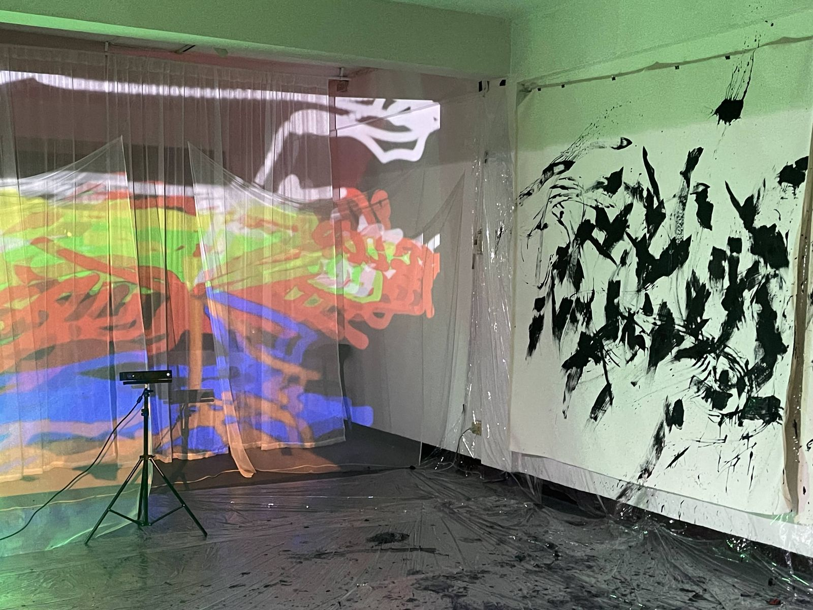
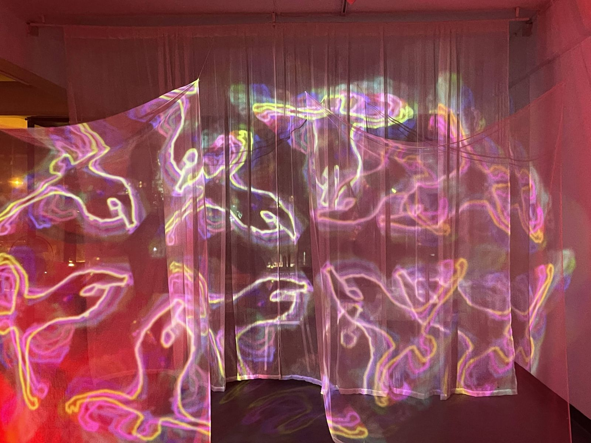

C-E-I-N-G takes its name from Jerng (เชิง), the Lanna martial art, handed down as an art of movement. Practising it means attending to body and mind in the moment and learning from nature; its postures carry the philosophy and way of life of the Lanna people, now slowly fading. In the work, performance extends the flat surface of painting: the artist's dance becomes the brushstroke, and technology stands in for paint and canvas. Made with Suteera Fankaew for the ArtistX Project at Some Space Gallery, Chiang Mai, and shown again during Chiang Mai Design Week at the Sukkho blacksmith shop in Chang Moi.
